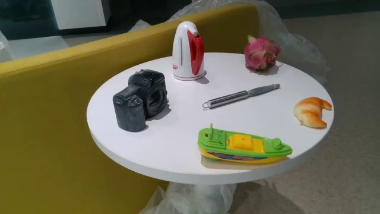
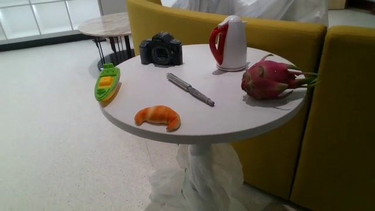
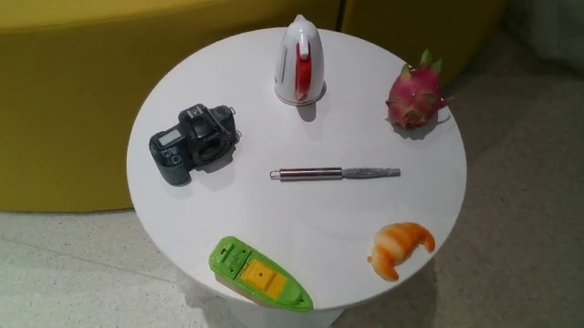
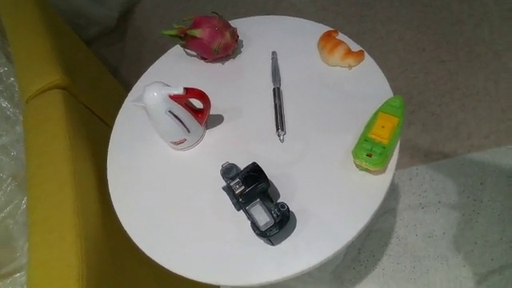
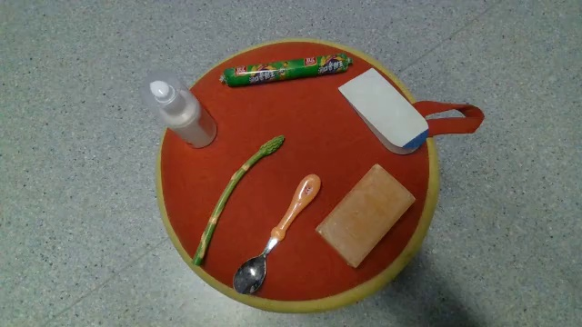
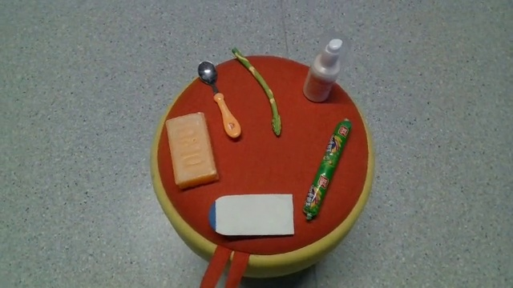
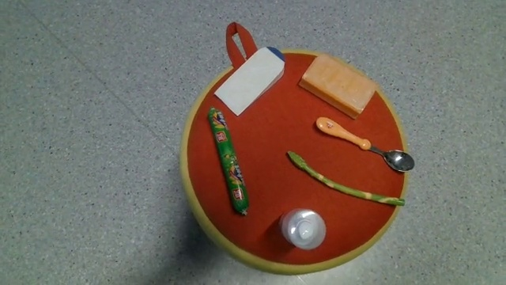
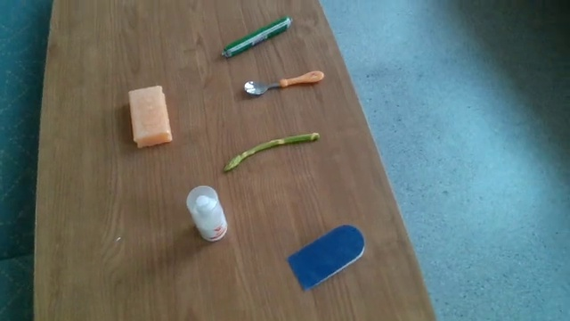
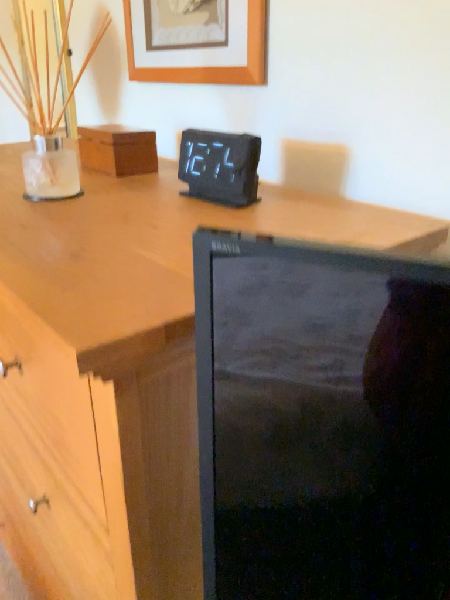
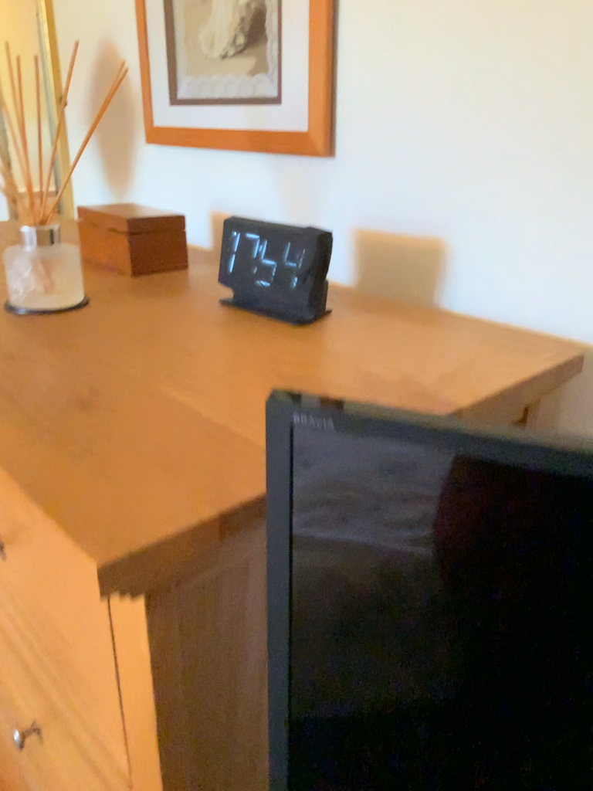

Camera Intrinsics
id 4134
multi-choice
single-image
Camera
SpatialScore-Repurpose
What is the focal length of the camera? Select from the following choices.
- (A)734.90 pixels
- (B)811.53 pixels
- (C)1002.50 pixels
- (D)886.52 pixels
answer(C)
img./repurposed_data/external/PointOdyssey/val/scene_d78_3rd/rgbs/rgb_03762.jpg
datasetsSpatialScore-Repurpose
datasetsSpatialScore-Repurpose
datasetsSpatialScore-Repurpose
Camera Extrinsics · Camera task
id 3530




showing 4 of 32 sampled frames
showing 4 of 32 sampled frames
showing 4 of 32 sampled frames
showing 4 of 32 sampled frames
multi-choice
video · 32 frames
Camera
STI-Bench
Given the initial pose at t=0s (identity), what is the camera pose at t=22s? Each option is a dict of translation (Tx, Ty, Tz) and a 3×3 rotation matrix (r11–r33).
- (A){Tx:-0.06, Ty:0.37, Tz:0.02, r…}
- (B){Tx:0.02, Ty:0.36, Tz:-0.04, r…}
- (C){Tx:0.10, Ty:0.32, Tz:-0.04, r…}
- (D){Tx:0.00, Ty:0.42, Tz:-0.08, r…}
- (E){Tx:0.01, Ty:0.36, Tz:-0.07, r…}
answerB
video./STI-Bench/video/000011.mp4
datasetsMMIUSITE-BenchSTI-BenchSpatialScore-Repurpose
datasetsMMIUSITE-BenchSTI-BenchSpatialScore-Repurpose
datasetsMMIUSITE-BenchSTI-BenchSpatialScore-Repurpose
Camera Extrinsics · Motion (Absolute)
id 3539




showing 4 of 32 sampled frames
showing 4 of 32 sampled frames
showing 4 of 32 sampled frames
showing 4 of 32 sampled frames
multi-choice
video · 32 frames
Motion (Absolute)
STI-Bench
What is the camera's displacement between 7s and 28s? (unit: m)
- (A)0.41 m
- (B)0.33 m
- (C)0.38 m
- (D)0.30 m
- (E)0.42 m
answerD
video./STI-Bench/video/000113.mp4
datasetsMMIUSITE-BenchSTI-BenchSpatialScore-Repurpose
datasetsMMIUSITE-BenchSTI-BenchSpatialScore-Repurpose
datasetsMMIUSITE-BenchSTI-BenchSpatialScore-Repurpose


judgement
multi-image · 2
Motion (Relative)
SpatialScore-Repurpose / CA-1M
Does this sentence accurately describe camera movement? The camera moved up.
answeryes
img1./repurposed_data/external/CA_val/42898570/752854364989625.wide/image.png
img2./repurposed_data/external/CA_val/42898570/752854464948791.wide/image.png
datasetsMMIUMMSI-BenchSITE-BenchSpatialScore-Repurpose
datasetsMMIUMMSI-BenchSITE-BenchSpatialScore-Repurpose
datasetsMMIUMMSI-BenchSITE-BenchSpatialScore-Repurpose
Homography Matrix
id 4284
multi-choice
multi-image · 2
Transformation
SpatialScore-Repurpose / Omni3D
Calculate the homography matrix that maps the original image to the transformed version. Select from the following options.
- (A)[[1.044, 0.059, -87.83], [0.142, 0.848, 44.02], […]]
- (B)[[1.096, -0.165, 89.27], [0.182, 1.258, -378.41], […]]
- (C)[[0.917, -0.252, 301.81], [0.254, 0.783, 25.32], […]]
- (D)[[0.844, -0.241, 343.62], [6e-5, 0.880, 115.36], […]]
answer(D)
orig./repurposed_data/external/Omni3D/datasets/objectron/train/laptop_batch_38_8_0000100.jpg
xformed./repurposed_data/homography/69236_1762721705269322_transformed.jpg
datasetsMMIUSpatialScore-Repurpose
datasetsMMIUSpatialScore-Repurpose
datasetsMMIUSpatialScore-Repurpose